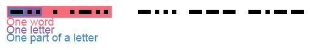
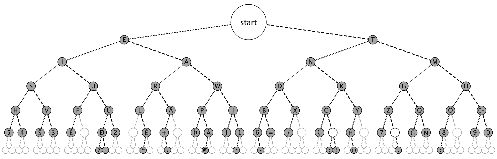

See also: W.I.P. Morse code translator (JavaScript)
You are almost certainly familiar with at least one piece of Morse code. "... --- ...", or SOS, is the internationally agreed upon, standard, emergency signal. Knowing, as one certainly does, this critical piece of information, one should be able to make two important deductions about Morse code. Firstly, that it is comprised of dots and dashes, which I shall represent on this page thusly, "." for dot, and "-" for dash. Secondly, one should be able to state that the Morse code for S is three dots ("...") and for O it is three dashes ("---"). Five easy-to-follow rules make understanding morse code very simple. They are:
These rules may be expressed more clearly through a diagram, such as this:
As you can see, the space between each element of a letter is the same size as a dot, the space between letters is the same size as a dash, and the space between words is the same as two dashes and one dot. This graph, available on Wikipedia, is an excellent way to see the way that Morse code characters are structured:
Let's try some examples:
Download this .wav file, and try to decifer what it says in Morse code. Click here to find out if you got it right!
If that's too fast, try this one, which is half the speed.